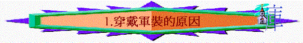

「我還有末了的話：你們要靠著主，倚賴他的大能大力作剛強的人。要穿戴神所賜的全副軍裝，就能抵擋魔鬼的詭計。]因我們並不是與屬血氣的爭戰（原文作摔跤；下同），乃是與那些執政的、掌權的、管轄這幽暗世界的，以及天空屬靈氣的惡魔爭戰。所以，要拿起神所賜的全副軍裝，好在磨難的日子抵擋仇敵，並且成就了一切，還能站立得住。所以要站穩了，用真理當作帶子束腰，用公義當作護心鏡遮胸。」弗6:10-14
∼保羅要求信徒要穿戴神所賜的全副軍裝；而「軍裝」或譯「武裝」，是軍人必備的裝備，但信徒在世不是每一個也成為地上的軍人，為何要穿上神所賜的全副軍裝呢？有以下原因：
一.穿戴軍裝的原因
1.有爭戰
A.與私慾爭戰
「因為情慾和聖靈相爭，聖靈和情慾相爭，這兩個是彼此相敵，使你們不能做所願意做的。」加5:17
「你們中間的爭戰鬥毆是從那裡來的呢？不是從你們百體中戰鬥之私慾來的嗎？」雅4:1
「親愛的弟兄啊，你們是客旅，是寄居的。我勸你們要禁戒肉體的私慾；這私慾是與靈魂爭戰的。」彼前2:11
「總要披戴主耶穌基督，不要為肉體安排，去放縱私慾。」羅13:14
∼人有七情六慾的，但若慾念越了界限，人由它放縱，就成為私慾，私慾也是與聖靈爭戰的，我們要制伏它，羅13:14提供了一個方法，就是披戴基督
B.與惡魔爭戰
「因我們並不是與屬血氣的爭戰（原文作摔跤；下同），乃是與那些執政的、掌權的、管轄這幽暗世界的，以及天空屬靈氣的惡魔爭戰。」弗6:12
∼惡魔指撒但，下文有詳細交待
C.與世人爭戰
「因為我們雖然在血氣中行事，卻不憑著血氣爭戰。我們爭戰的兵器本不是屬血氣的，乃是在神面前有能力，可以攻破堅固的營壘，將各樣的計謀，各樣攔阻人認識神的那些自高之事，一概攻破了，又將人所有的心意奪回，使他都順服基督。」林後10:3-5
∼我們也與世人爭戰，世人是抗拒神及不認識神的，我們要有兵器及裝備，要將人的心意奪回，使他們順服基督
2.有仇敵
「要穿戴神所賜的全副軍裝，就能抵擋魔鬼的詭計。因我們並不是與屬血氣的爭戰（原文作摔跤；下同），乃是與那些執政的、掌權的、管轄這幽暗世界的，以及天空屬靈氣的惡魔爭戰。」弗 6:11-12
A.牠的特質
a.魔鬼：毁謗者----喜歡毁謗信徒
b.惡魔：是邪惡的，充滿罪惡的，也想人犯罪
c.執政的：有權柄的，在地上掌權的，管轄幽暗世界(幽暗----指黑暗犯罪的世代)
d.屬靈氣的：牠也是屬靈的，不是肉體的物件
B.牠的心意
「使我們不再作小孩子，中了人的詭計和欺騙的法術，被一切異教之風搖動，飄來飄去，就隨從各樣的異端；」弗4:14
「所以，要拿起神所賜的全副軍裝，好在磨難的日子抵擋仇敵，並且成就了一切，還能站立得住。」弗6:13
a.令人被騙
b.叫人搖動
c.叫人跌倒(不能站立得住)
d.叫人隨從
C.牠的詭計
a.試探人
(1)對夏娃的試探
「耶和華 神所造的，惟有蛇比田野一切的活物更狡猾。蛇對女人說：「神豈是真說不許你們吃園中所有樹上的果子嗎？」」創3:1
(A)懷疑神的說話
「神豈是真說……….」
(B)扭曲犯罪後果
「蛇對女人說：「你們不一定死；」創3:4
(a)削弱後果
〜「不一定死」
(b)美化結果
〜「便如神能知道善惡」
(C)用世界的事情
「於是女人見那棵樹的果子好作食物，也悅人的眼目，且是可喜愛的，能使人有智慧，就摘下果子來吃了，又給他丈夫，他丈夫也吃了。」創3:6
(a)肉體的情慾------「好作食物」
(b)眼目的情慾------「悅人的眼目」
(c)今生的驕傲------「能使人有智慧」
(2)對耶穌的試探
(A)用世界的吸引
(a)肉體的情慾
「他禁食四十晝夜，後來就餓了。那試探人的進前來，對他說：「你若是神的兒子，可以吩咐這些石頭變成食物。」」太4:2-3
(b)今生的驕傲
「魔鬼就帶他進了聖城，叫他站在殿頂（頂原文作翅）上，對他說：「你若是神的兒子，可以跳下去，因為經上記著：主要為你吩咐他的使者用手托著你，免得你的腳碰在石頭上。」」太4:5-6
(c)眼的情慾
「魔鬼又帶他上了一座最高的山，將世上的萬國與萬國的榮華都指給他看，對他說：「你若俯伏拜我，我就把這一切都賜給你。」」太4:8-9
(B)用使命的催逼
∼祂來到世間，為要証明自己是君王，彌賽亞，擁有權柄，也應驗聖經所說的話，並使萬人都歸信祂
(a)權柄可顯露
∼若祂吩咐石頭變食物，祂就可顯出祂王者的權柄，為何不吩咐！
(b)王者可突出
∼若祂跳下來，必有很多人見到祂，天使也托著祂，豈不是可顯露祂王者的身份，為何不跳！
(c)萬國盡歸手
∼只要簡單向撒但拜一拜，萬國也屬祂，為何不拜呢！
(C)用聖經的話語
「對他說：「你若是神的兒子，可以跳下去，因為經上記著：主要為你吩咐他的使者用手托著你，免得你的腳碰在石頭上。」」太4:6
b.擊打人
(1)加苦難
「於是撒但從耶和華面前退去，擊打約伯，使他從腳掌到頭頂長毒瘡。」伯2:7
「又恐怕我因所得的啟示甚大，就過於自高，所以有一根刺加在我肉體上，就是撒但的差役要攻擊我，免得我過於自高。」林後12:7
(2)殺害人
「你們是出於你們的父魔鬼，你們父的私慾你們偏要行。他從起初是殺人的，不守真理，因他心裡沒有真理。他說謊是出於自己；因他本來是說謊的，也是說謊之人的父。」約8:44
c.激動人
(1)利用個別的人物----大衛
「撒但起來攻擊以色列人，激動大衛數點他們。」代上21:1
(2)攻擊整體的選民
「約押說：「願耶和華使他的百姓比現在加增百倍。我主我王啊，他們不都是你的僕人嗎？我主為何吩咐行這事，為何使以色列人陷在罪裡呢？」」代上21:3
(3)認識屬靈的原則
「神不喜悅這數點百姓的事，便降災給以色列人。」代上21:7
〜牠知道數民事件是神不喜悅，神必會刑罰選民，撒但用此屬靈原則，使選民犯罪，嘗試用神擊打選民(當然神也是全知的神，祂也藉萬事互相效力，叫選民至終得益)
d.迷惑人
「大龍就是那古蛇，名叫魔鬼，又叫撒但，是迷惑普天下的。他被摔在地上，他的使者也一同被摔下去。」啟12:9
(1)說謊者
「你們是出於你們的父魔鬼，你們父的私慾你們偏要行。他從起初是殺人的，不守真理，因他心裡沒有真理。他說謊是出於自己；因他本來是說謊的，也是說謊之人的父。」約8:44
「那撒但一會的，自稱是猶太人，其實不是猶太人，乃是說謊話的，我要使他們來，在你腳前下拜，也使他們知道我是已經愛你了。」啟3:9
(2)假天使
「這也不足為怪，因為連撒但也裝作光明的天使。」林後11:14
「但無論是我們，是天上來的使者，若傳福音給你們，與我們所傳給你們的不同，他就應當被咒詛。」加1:8
(3)假使徒
「那等人是假使徒，行事詭詐，裝作基督使徒的模樣。」林後11:13
「所以他的差役，若裝作仁義的差役，也不算希奇。他們的結局必然照著他們的行為。」林後11:15
(4)假先知
「親愛的弟兄啊，一切的靈，你們不可都信，總要試驗那些靈是出於神的不是，因為世上有許多假先知已經出來了。」約壹4:1
「那迷惑他們的魔鬼被扔在硫磺的火湖裡，就是獸和假先知所在的地方。他們必晝夜受痛苦，直到永永遠遠。」啟20:10
(5)謬妄靈
「凡靈不認耶穌，就不是出於神；這是那敵基督者的靈。你們從前聽見他要來，現在已經在世上了。」約壹4:3
(6)行奇事
「他因賜給他權柄在獸面前能行奇事，就迷惑住在地上的人，說：「要給那受刀傷還活著的獸作個像。」」啟13:14
(7)行法術
「使我們不再作小孩子，中了人的詭計和欺騙的法術，被一切異教之風搖動，飄來飄去，就隨從各樣的異端；」弗4:14
(8)鬼道理
「聖靈明說，在後來的時候，必有人離棄真道，聽從那引誘人的邪靈和鬼魔的道理。」提前4:1
「弟兄們，論到我們主耶穌基督降臨和我們到他那裡聚集，我勸你們：無論有靈、有言語、有冒我名的書信，說主的日子現在（現在或作就）到了，不要輕易動心，也不要驚慌。人不拘用什麼法子，你們總不要被他誘惑；因為那日子以前，必有離道反教的事，並有那大罪人，就是沉淪之子，顯露出來。」帖後2:1-3
e.控訴人
「若有叫人憂愁的，他不但叫我憂愁，也是叫你們眾人有幾分憂愁。我說幾分，恐怕說得太重。這樣的人受了眾人的責罰也就夠了，」林後2:5-6
「免得撒但趁著機會勝過我們，因我們並非不曉得他的詭計。」林後2:11
「我聽見在天上有大聲音說：「我神的救恩、能力、國度、並他基督的權柄，現在都來到了！因為那在我們神面前晝夜控告我們弟兄的，已經被摔下去了。」啟12:10
f.阻擋神
(1)抵擋神的工作
「天使（原文作他）又指給我看：大祭司約書亞站在耶和華的使者面前；撒但也站在約書亞的右邊，與他作對。」亞3:1
「從此，耶穌才指示門徒，他必須上耶路撒冷去，受長老、祭司長、文士許多的苦，並且被殺，第三日復活。彼得就拉著他，勸他說：「主啊，萬不可如此！這事必不臨到你身上。」耶穌轉過來，對彼得說：「撒但，退我後邊去吧！你是絆我腳的；因為你不體貼神的意思，只體貼人的意思。」」太16:21-23
「弟兄們，你們記念我們的辛苦勞碌，晝夜做工，傳神的福音給你們，免得叫你們一人受累。」帖前2:9
〜在聖經歷史中，撒但千方百計阻擋神的工作，例如牠嘗試用方法令聖殿不被重建，令主耶穌不行十的路，令保羅宣教旅程受阻。
(2)奪去神的話語
「凡聽見天國道理不明白的，那惡者就來，把所撒在他心裡的奪了去；這就是撒在路旁的了。」太13:19
3.主回來
「再者，你們曉得現今就是該趁早睡醒的時候；因為我們得救，現今比初信的時候更近了。黑夜已深，白晝將近；我們就當脫去暗昧的行為，帶上光明的兵器。行事為人要端正，好像行在白晝。不可荒宴醉酒，不可好色邪蕩，不可爭競嫉妒；總要披戴主耶穌基督，不要為肉體安排，去放縱私慾。」羅13:11-14
∼「得救」----指將來主回來，我們全人得贖的日子(包括身體與靈魂)
∼將來主回來的日子更近了(比初信時)，所以信徒要預備等主來，如何預備？要披戴(原文穿戴同一意思)軍裝，帶上兵器，儆醒等主來
二.穿戴軍裝的果效
1.不放縱肉體
「總要披戴主耶穌基督，不要為肉體安排，去放縱私慾。」羅13:14
2.能抵擋仇敵
「所以，要拿起神所賜的全副軍裝，好在磨難的日子抵擋仇敵，並且成就了一切，還能站立得住。」弗6:13
3.能站立得住
4.能滅盡攻擊
「此外，又拿著信德當作藤牌，可以滅盡那惡者一切的火箭；」弗6:16
5.能搶救靈魂
「將各樣的計謀，各樣攔阻人認識神的那些自高之事，一概攻破了，又將人所有的心意奪回，使他都順服基督。」林後10:5